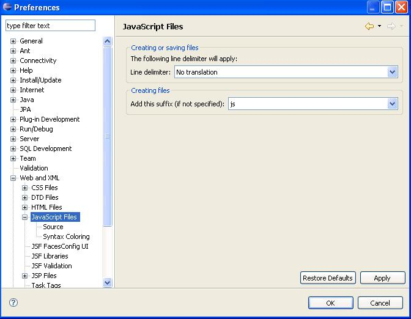
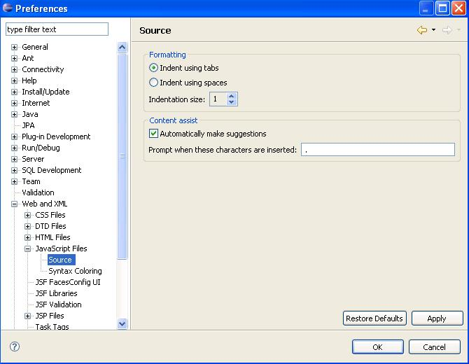
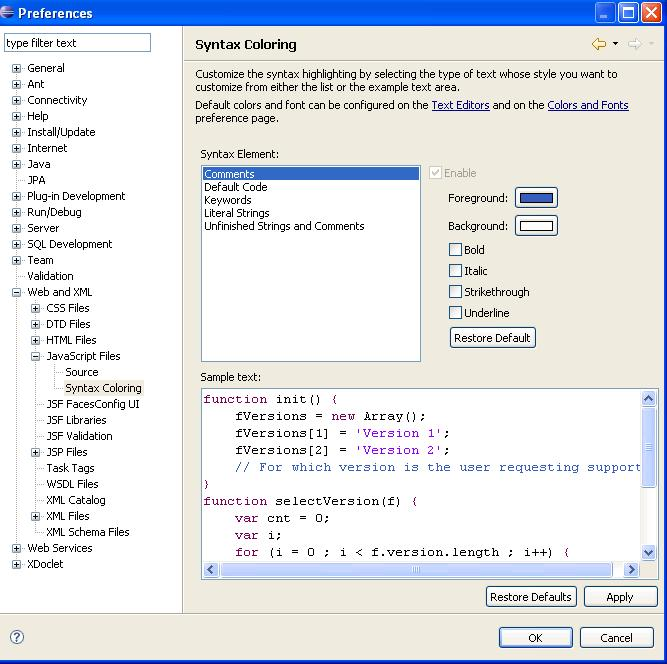

JavaScript Preference Pages
Steps:
- Select Window->Preferences... from the menu bar.
- Select General->Web and XML->JavaScript Files in the left pane.
- Verify the translations for this page.

- Select General->Web and XML->JavaScript Files->Source in the
left pane.
- Verify the translations for this page.

- Select General->Web and XML->JavaScript Files->Syntax
Coloring in the left pane.
- Verify the translations for this page.

Note: the Color dialog invoked from the Syntax Coloring preferences
pages is from the native operating system. Depending on the locale set
in the operating system, the Color dialog may or may not be translated.
- Press the Cancel button from the Preferences dialog. Discard
any changes.